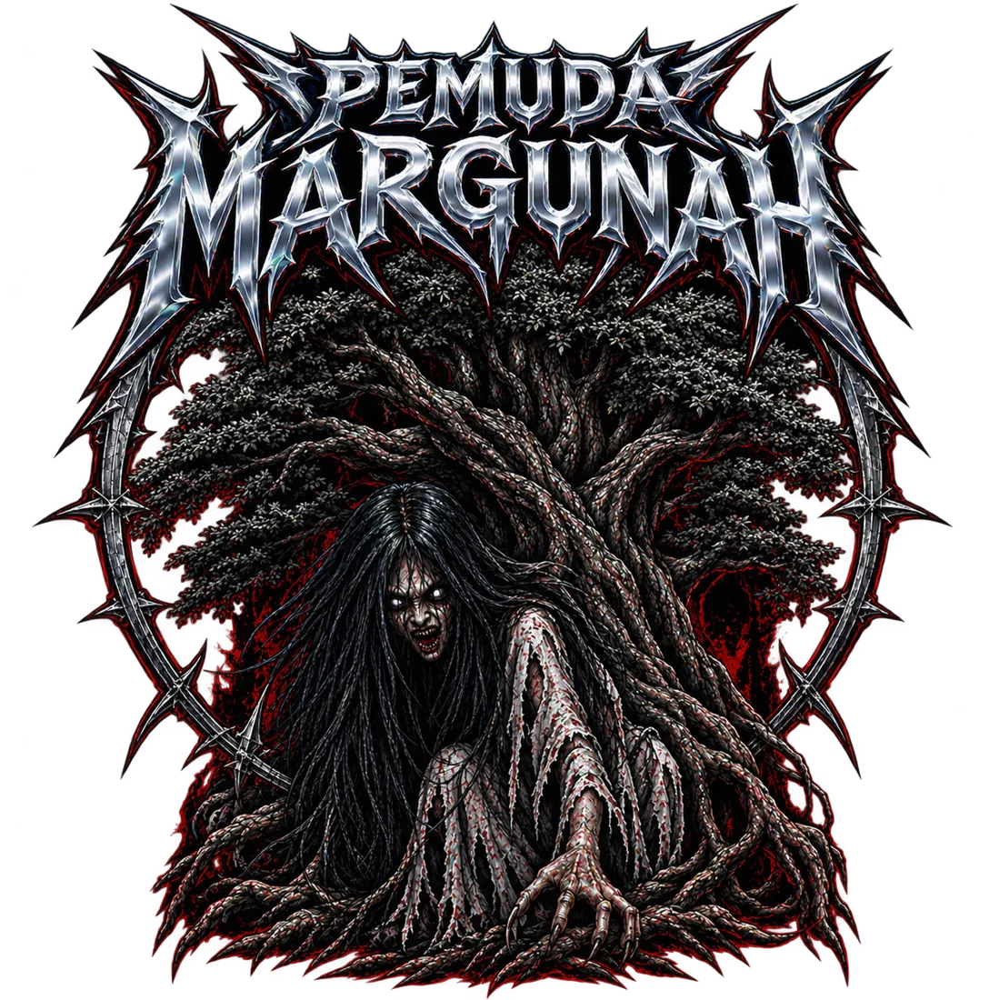
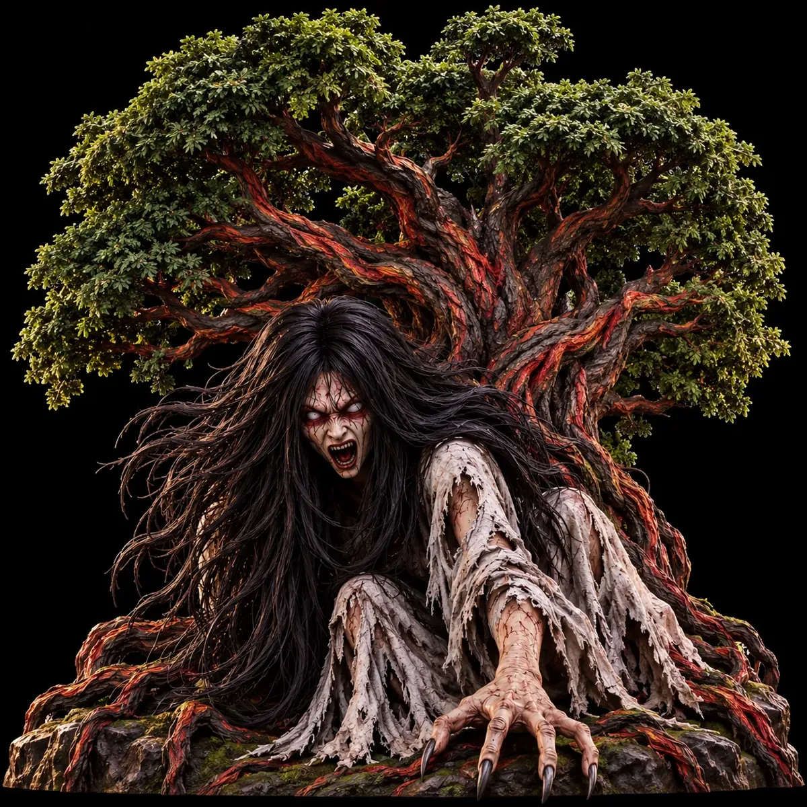
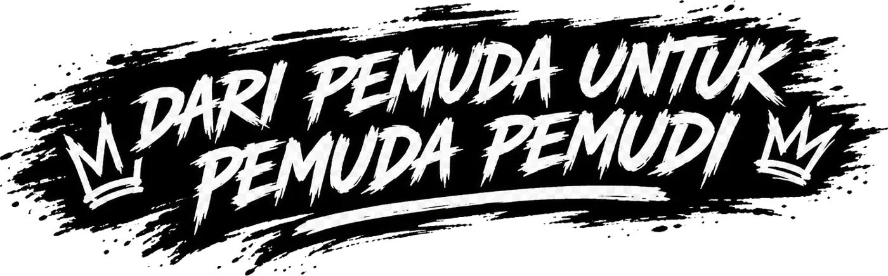
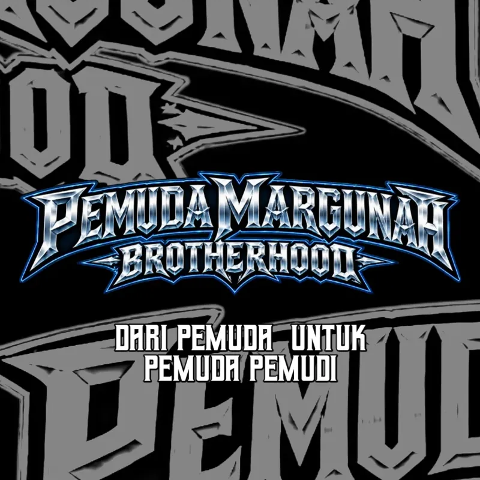
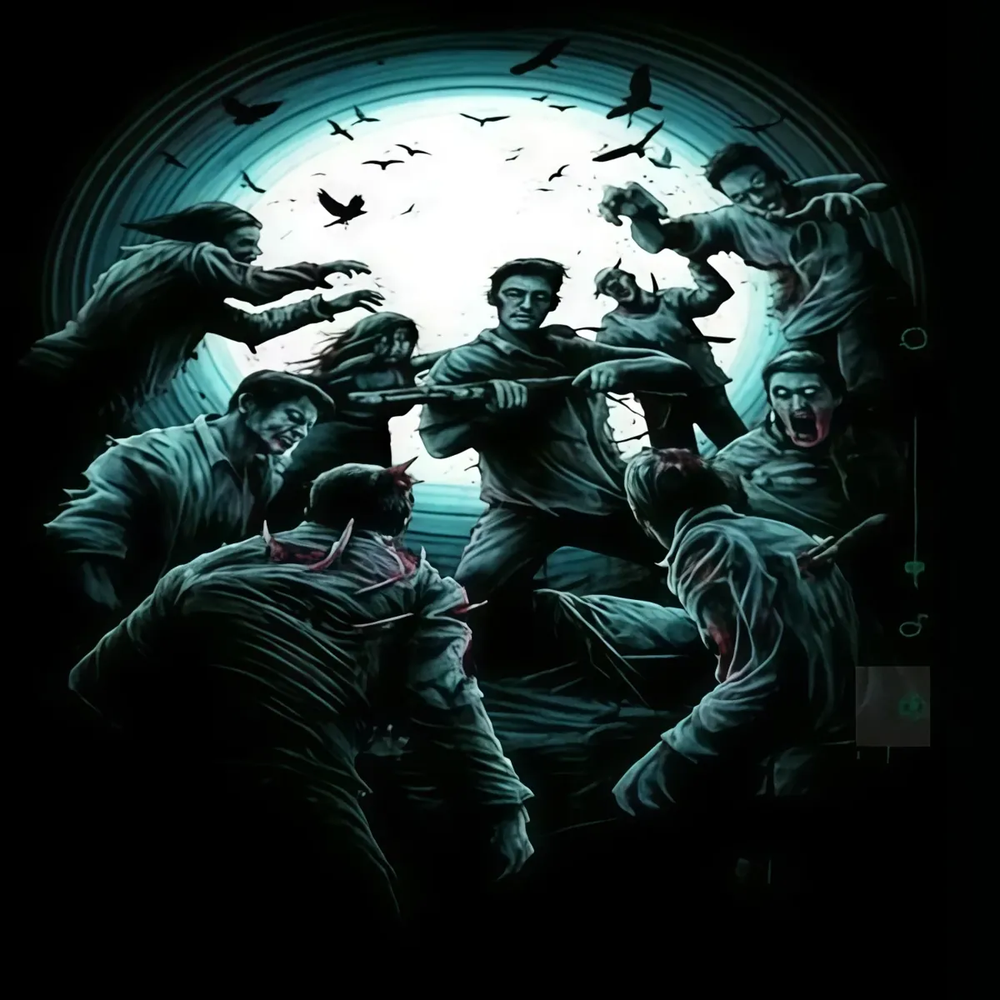
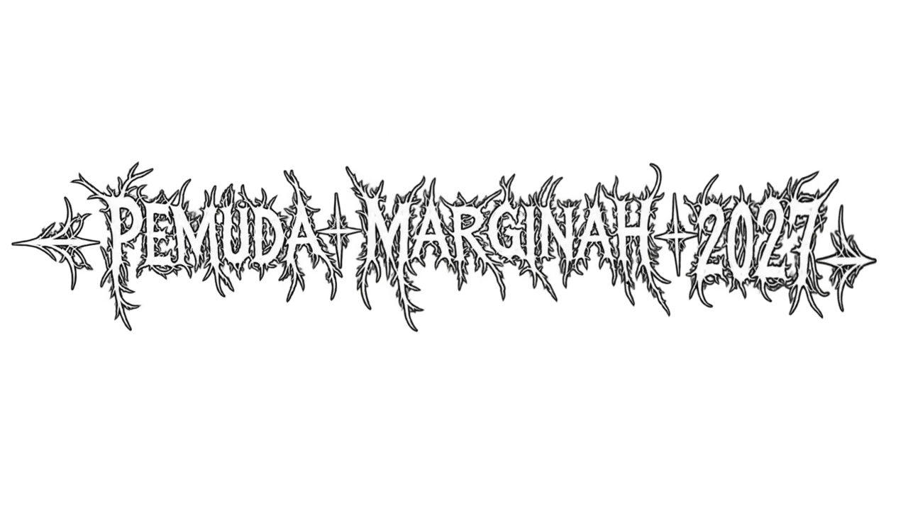

Identity

Awal perjalanan
We exist to contain the frightening power of the youth.
Arsip ini mencatat tahun pertama (2026) hingga 2027.
Kebersamaan
persauaraan bukan hanya tentang hubungan darah, Melaikan siapa yang tidak memusuhi sesamanya di juga saudara
untuk pemuda pemudi.
Nilai & semangat
Persaudaraan
Berbeda pendapat bukan alasan untuk terpecah. Kita berdiri sebagai saudara, saling menghargai, menjaga ikatan, dan tumbuh bersama dalam satu keluarga
Gotong Royong
Tidak ada pekerjaan besar jika dikerjakan bersama. Setiap tangan punya peran, setiap kontribusi punya arti, dan setiap usaha menjadi kekuatan bersama.
Solidaritas
Hadir bukan hanya saat bahagia, tetapi juga ketika saudara membutuhkan. Saling membantu, saling menguatkan, dan tidak meninggalkan satu sama lain.
Tanggung Jawab
Menjadi pemuda bukan sekadar tentang usia, melainkan tentang keberanian mengambil peran, menjaga amanah, dan memberikan dampak bagi lingkungan.


Elemen visual
Logo, emblem, dan warna khas yang muncul di karya komunitas.


